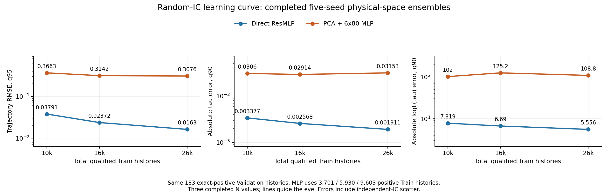
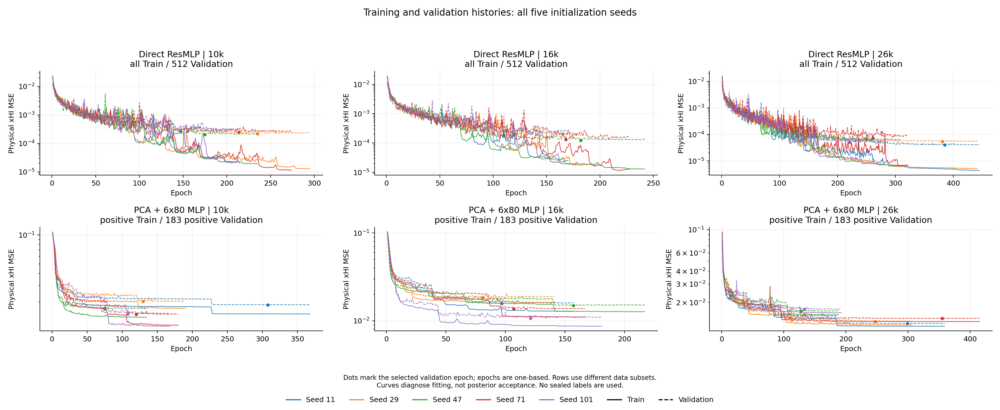

100k 参数空间覆盖
基于 Random-IC 物理框架完成 100k 组 21cmFAST 训练模拟与独立验证集，覆盖 10 维天体物理与破幂律原初功率谱参数（kₚ, mₛ）。
PSX-emu v1.0 · TRACK B RELEASE / 100k SAMPLES · 4 ARD-GP PATCHES
基于 100k 组 21cmFAST 模拟样本构建的再电离历史与 21 cm 功率谱模拟器，配备 4 项 Matérn-5/2 ARD-GP 残差补丁，并已完成 3 路 8D MCMC（Stretch + GMM）对照与高红移 UV LF 聚集分析。
SURROGATE ARCHITECTURE / 4 MATÉRN-5/2 ARD-GP PATCHES / 8D MCMC
基于 Random-IC 物理框架完成 100k 组 21cmFAST 训练模拟与独立验证集，覆盖 10 维天体物理与破幂律原初功率谱参数（kₚ, mₛ）。
针对神经网络残差耦合 4 组 Matérn-5/2 ARD-GP 局部误差修正器，将物理约束与观测似然评估收敛到亚百分位误差区间。
使用 Stretch + GMM 采样器完成 8D 联合似然（UV LF + τₑ + xHI + HERA 上限）三路交叉检验，并与高红移 UV LF 聚集分析（uvlf-clustering-bt）互相印证。
历史开发快照 / HKT · 以下保留 2026 年 10 月开发波次与早期间隔检查记录，现已由上方 PSX-emu v1.0 替代。
OCTOBER 2026 ARCHIVED SNAPSHOT
QUALIFIED HISTORIES / FROZEN TARGET / RESUMABLE WAVES
包含保留的 v1 Train；classifier-negative histories 全部保留。
独立参数设计；v1 的 512 条 benchmark 另行保留。
—
Train classifier-positive fraction，使用原插值得到的 xHI(5.9) < 0.31。
FROZEN SNAPSHOT / 9,094 TRAIN
3,372 positive · 5,722 negative · cut ±0.01: 24 samples.
10K / 16K / 26K SNAPSHOT


HISTORICAL BENCHMARK
—
| HISTORY 模型 | 验证范围 | RMSE q95 | |Δτ| q90 |
|---|
SELECTED NATIVE SHA256—